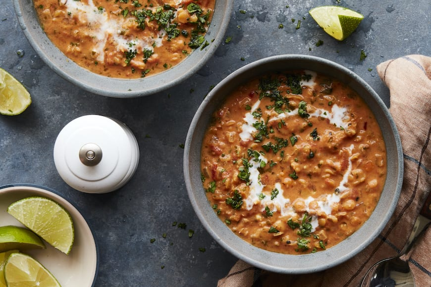

Lentil Soup

Description:
Lentil soup might often not look or sound very apetizing, but it's simple to make, and it's a tasty way of incorporating more variety of protein into your diet!"
Ingredients:
- 1 big onion
- 1 carrot, peeled
- 250g frozen spinach
- 1 cup tomato puree
- 2 cups vegetable broth
- 1 cup red lentils
- 1 tsp cumin
- 1 tbsp tomato paste
- 1 tbsp garam masala spice
- Salt and pepper to taste
Steps:
- Dice carrot and onion.
- Cook onion in a small pot with a bit of olive oil until golden, then add carrot and let it cook for about 3-5 minutes.
- Add vegatable stock, tomato puree, all the spices and tomato paste. Let it cook for a few minutes and then add red lentils.
- Cook for about 20 minutes on low, stir occasionaly.
- When lentils are soft, add frozen spinach and stir until its cooked.
- Serve hot with a splash of sour cream on top.